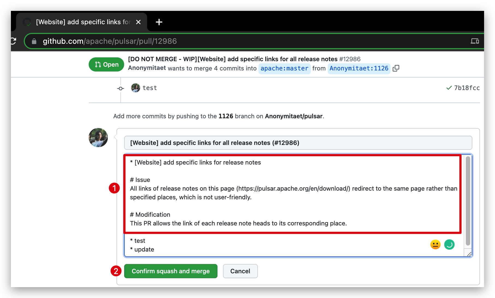

Contributing to Apache Pulsar
The Apache Pulsar community welcomes contributions from anyone with a passion for distributed systems! Pulsar has many different opportunities for contributions -- write new examples/tutorials, add new user-facing libraries, write new Pulsar IO connectors, or participate on the documentation effort.
We use a review-then-commit workflow in Pulsar for all contributions.
For larger contributions or those that affect multiple components:
- Engage: We encourage you to work with the Pulsar community on the Github Issues and developer’s mailing list to identify good areas for contribution.
- Design: More complicated contributions will likely benefit from some early discussion in order to scope and design them well.
For all contributions:
- Code: code changes are always welcomed.
- Doc: it is worth taking the time to make users know your code changes. Pulsar's long-term success rests on its ease of use, maintainability, etc.
- Review: Submit a pull request with your contribution to our GitHub Repo. Work with a committer to review and iterate on the code, if needed.
- Commit: Once at least 2 Pulsar committers have approved the pull request, a Pulsar committer will merge it into the master branch (and potentially backport to stable branches in case of bug fixes).
We look forward to working with you!
Engage
Mailing list(s)
We discuss design and implementation issues on the dev@pulsar.apache.org
mailing list, which is archived here.
Join by emailing dev-subscribe@pulsar.apache.org.
If interested, you can also join the other mailing lists.
Github Issues
We are using Github Issues as the issue tracking and project management tool, as well as a way to communicate among a very diverse and distributed set of contributors. To be able to gather feedback, avoid frustration, and avoid duplicated efforts all Pulsar related work are being tracked there.
If you do not already have an Github account, sign up here.
If a quick search doesn’t turn up an existing Github issue for the work you want to contribute, create it. Please discuss your idea with a committer in Github or, alternatively, on the developer mailing list.
If there’s an existing Github issue for your intended contribution, please comment about your intended work. Once the work is understood, a committer will assign the issue to you. If an issue is currently assigned, please check with the current assignee before reassigning.
For moderate or large contributions, you should not start coding or writing a design document unless there is a corresponding Github issue assigned to you for that work. Simple changes, like fixing typos, do not require an associated issue.
Online discussions
We are using Apache Pulsar Slack channel for online discussions. You can self-invite yourself by accessing this link.
Slack channels are great for quick questions or discussions on specialized topics. Remember that we strongly encourage communication via the mailing lists, and we prefer to discuss more complex subjects by email. Developers should be careful to move or duplicate all the official or useful discussions to the issue tracking system and/or the dev mailing list.
Design
To avoid potential frustration during the code review cycle, we encourage you to clearly scope and design non-trivial contributions with the Pulsar community before you start coding.
We are using "Pulsar Improvement Proposals" (or "PIP") for managing major changes to Pulsar. The list of all PIPs is maintained in the Pulsar wiki at https://github.com/apache/pulsar/wiki.
Code
To contribute code to Apache Pulsar, you’ll have to do a few administrative steps once, and then follow the Coding Guide.
One-time Setup
[Optionally] Submit Contributor License Agreement
Apache Software Foundation (ASF) desires that all contributors of ideas, code, or documentation to the Apache projects complete, sign, and submit an Individual Contributor License Agreement (ICLA). The purpose of this agreement is to clearly define the terms under which intellectual property has been contributed to the ASF and thereby allow us to defend the project should there be a legal dispute regarding the software at some future time.
We require you to have an ICLA on file with the Apache Secretary for larger contributions only. For smaller ones, however, we rely on clause five of the Apache License, Version 2.0, describing licensing of intentionally submitted contributions and do not require an ICLA in that case.
Obtain a GitHub account
We use GitHub’s pull request functionality to review proposed code changes.
If you do not already have a personal GitHub account, sign up here.
Fork the repository on GitHub
Go to the Pulsar GitHub Repo and fork the repository to your own private account. This will be your private workspace for staging changes.
Clone the repository locally
You are now ready to create the development environment on your local machine. Feel free to repeat these steps on all machines that you want to use for development.
We assume you are using SSH-based authentication with GitHub. If necessary, exchange SSH keys with GitHub by following their instructions.
Clone your personal Pulsar’s GitHub fork.
$ git clone https://github.com/<Github_user>/pulsar.git
$ cd pulsar
Add Apache Repo as additional Git remotes, where you can sync the changes (for committers, you need these two remotes for pushing changes).
$ git remote add apache https://github.com/apache/pulsar
You are now ready to start developing!
IDE Setup
For how to set up IDE, see here.
Create a branch in your fork
You’ll work on your contribution in a branch in your own (forked) repository. Create a local branch, initialized with the state of the branch you expect your changes to be merged into. Keep in mind that we use several branches, including master, feature-specific, and release-specific branches. If you are unsure, initialize with the state of the master branch.
$ git fetch apache
$ git checkout -b <my-branch> apache/master
At this point, you can start making and committing changes to this branch in a standard way.
Syncing and pushing your branch
Periodically while you work, and certainly before submitting a pull request, you should update your branch with the most recent changes to the target branch.
$ git pull --rebase
Remember to always use --rebase parameter to avoid extraneous merge commits.
Then you can push your local, committed changes to your (forked) repository on GitHub. Since rebase may change that branch's history, you may need to force push. You'll run:
$ git push <GitHub_user> <my-branch> --force
Testing
All code should have appropriate unit testing coverage. New code should have new tests in the same contribution. Bug fixes should include a regression test to prevent the issue from reoccurring.
Licensing
All code contributed to Pulsar will be licensed under Apache License V2. You need to ensure every new files you are adding have the right license header. You can add license header to your files by running following command:
$ mvn initialize license:format
Develop C++/Python Client
Currently C++ and Python client are developed under pulsar-client-cpp directory. You can use following commands to build and test your c++ or python code changes.
Build C++/Python Client
$ ./pulsar-client-cpp/docker-build.sh
Run C++/Python Client Tests
$ ./pulsar-client-cpp/docker-test.sh
Checkstyle
Before you push the C++/Python changes for review, you should format the files to apply the checkstyle rule Pulsar is using for C++/Python code.
$ ./pulsar-client-cpp/docker-format.sh
Review
Once the initial code is complete and the tests pass, it’s time to start the code review process. We review and discuss all code, no matter who authors it. It’s a great way to build community, since you can learn from other developers, and they become familiar with your contribution. It also builds a strong project by encouraging a high quality bar and keeping code consistent throughout the project.
Create a pull request
Organize your commits to make a committer’s job easier when reviewing. Committers normally prefer multiple small pull requests, instead of a single large pull request. Within a pull request, a relatively small number of commits that break the problem into logical steps is preferred. For most pull requests, you'll squash your changes down to 1 commit. You can use the following command to re-order, squash, edit, or change description of individual commits.
$ git rebase -i apache/master
You'll then push to your branch on GitHub. Note: when updating your commit after pull request feedback and use squash to get back to one commit, you will need to do a force submit to the branch on your repo.
Navigate to the Pulsar GitHub Repo to create a pull request.
Note
Vague, boring, and unclear PR titles decrease team efficiency and productivity. Good titles speed up the review process and increase search efficiency. PR titles should be engaging, easy to understand, and readable. For how to write self-explanatory PR titles and quality PR title examples, see [Guideline] Pulsar PR Naming Convention.
In the pull request description, please include:
- Motivation : Why is this change needed? What problem is addressing?
- Changes: Summary of what this pull request is changing, to help reviewers at better understanding the changes.
Please include a descriptive pull request message to help make the committer’s job easier when reviewing. It’s fine to refer to existing design docs or the contents of the associated issue as appropriate.
If the pull request is fixing an issue, include a mention to in the description, like:
Fixes #1234
This will automatically change the state on the referenced issues.
If you know a good committer to review your pull request, please make a comment like the following. If not, don’t worry -- a committer will pick it up.
Hi @<GitHub-committer-username>, can you please take a look?
When choosing a committer to review, think about who is the expert on the relevant code, who the stakeholders are for this change, and who else would benefit from becoming familiar with the code. If you’d appreciate comments from additional folks but already have a main committer, you can explicitly cc them using @<GitHub-committer-username>.
Code Review and Revision
During the code review process, don’t rebase your branch or otherwise modify published commits, since this can remove existing comment history and be confusing to the committer when reviewing. When you make a revision, always push it in a new commit.
Our GitHub repo automatically provides pre-commit testing coverage using Jenkins. Please make sure those tests pass; the contribution cannot be merged otherwise.
LGTM
Once the committer is happy with the change, they’ll approve the pull request with an LGTM (“looks good to me!”) or a +1. At this point, the committer will take over, possibly make some additional touch ups, and merge your changes into the codebase.
In the case the author is also a committer, either can merge the pull request. Just be sure to communicate clearly whose responsibility it is in this particular case.
Thank you for your contribution to Pulsar!
Deleting your branch
Once the pull request is merged into the Pulsar repository, you can safely delete the branch locally and purge it from your forked repository.
From another local branch, run:
$ git fetch origin
$ git branch -d <my-branch>
$ git push origin --delete <my-branch>
Commit (committers only)
Once the code has been peer reviewed by a committer, the next step is for the committer to merge it into the Github repo.
Pull requests should not be merged before the review has approved from at least 2 committers.
Tip
Git commit message is not only the best way to communicate context about code changes, but also shows whether a developer is a good collaborator. If the first commit message of a PR is not clear but the PR description is clear and concise, when merging a PR, consider copying the PR description to the commit message box or writing a proper one rather than using the default (first) commit message (see image below). In this way, others know the changes clearly, which is beneficial to cut a release or write a release note. Be well cared for git log is a healthy and sustainable thing.

Contributor License Agreement
If you are merging a larger contribution, please make sure that the contributor has an ICLA on file with the Apache Secretary. You can view the list of committers here, as well as ICLA-signers who aren’t yet committers.
For smaller contributions, however, this is not required. In this case, we rely on clause five of the Apache License, Version 2.0, describing licensing of intentionally submitted contributions.
Documentation
Website
The Pulsar website is in the same Pulsar Github Repo. The source files are hosted under site2 directory in master branch,
the static content is generated by CI job and merged into the asf-site branch.
Follow the README for making contributions to the website.
Updating user logo
The Apache Pulsar Community welcomes all users to update their company logos on Pulsar website. If your team or organization has adopted Pulsar in production, you can update your company logos on Pulsar website.
To update your company logo, follow these steps:
Open link in your browser, then click the Edit icon to fork Pulsar repo, create a new branch and edit this file.
Add your company’s information at the end of file.
Example:
{ name: 'StreamNative', url: 'https://streamnative.io/', logo: 'https://streamnative.io/static/images/streamnative-logo-white-bakground.png', logo_white: true }Note The
logo_whiteparameter is set totrueonly when your company logo is in white color. Otherwise, you only need to addname,urlandlogo.Commit the changes in your account’s repo, publish the branch and create pull request.
Update comments, if any. If no more comment, your pull request will be approved and merged by reviewers.
Becoming a committer
Committers are community members that have write access to the project’s repositories, i.e., they can modify the code, documentation, and website by themselves and also accept other contributions.
There is no strict protocol for becoming a committer. Candidates for new committers are typically people that are active contributors and community members.
Being an active community member means participating on mailing list discussions, helping to answer questions, verifying release candidates, being respectful towards others, and following the meritocratic principles of community management. Since the Apache Way has a strong focus on the project community, this part is very important.
Of course, contributing code and documentation to the project is important as well. A good way to start is contributing improvements, new features, or bug fixes. You need to show that you take responsibility for the code that you contribute, add tests and documentation, and help maintaining it.
Every new committer has to be proposed by a current committer and then privately discussed and voted in by the members of the Pulsar PMC. For details about this process and for candidate requirements see the general Apache guidelines for assessing new candidates for committership. Candidates prepare for their nomination as committer by contributing to the Pulsar project and its community, by acting according to the Apache Way, and by generally following the path from contributor to committer for Apache projects.
If you would like to become a committer, you should engage with the community and start contributing to Apache Pulsar in any of the above ways. You might also want to talk to other committers and ask for their advice and guidance.
Becoming member of PMC
The PMC is the project governance body. Committers or contributors that have demonstrated continued involvement with the community can be nominated to become members of the PMC.
PMC members nominate new contributors to the project as either committers or as new PMC members, and PMC members cast votes on electing new committers or PMC members to the project. PMC members also have binding votes on any project matters. Refer to ASF PMCs governance for a more detailed explanation of the duties and roles of the PMC.